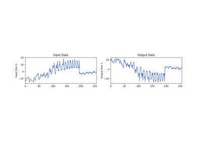
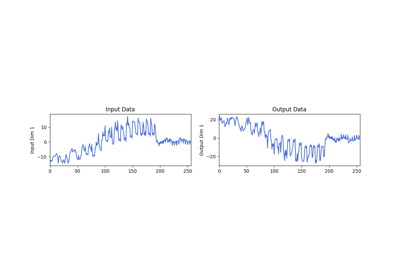
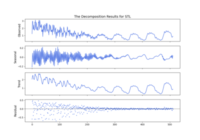
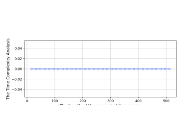
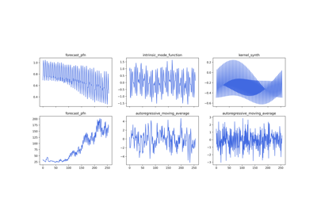
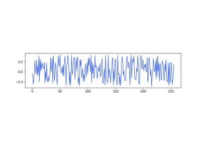
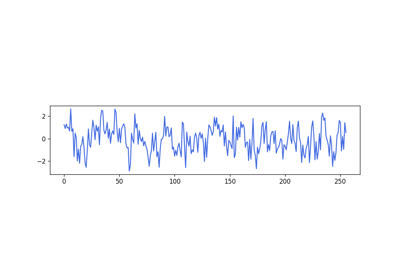
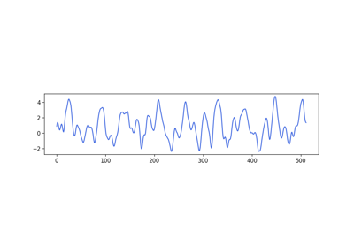
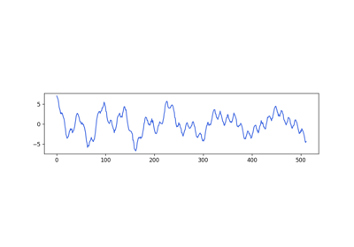

Examples#
This gallery contains examples demonstrating the usage of S2Generator for signal generation and analysis.

The Demo of S^2 Generator for Series-Symbol Data Generation
The Demo of S^2 Generator for Series-Symbol Data Generation

The logging for S^2 Generator

The Seasonal-Trend decomposition using LOESS
The Seasonal-Trend decomposition using LOESS

Time Complexity Analysis for The S^2 Data Generation
Time Complexity Analysis for The S^2 Data Generation

The Generation for Excitation Time Series
The Generation for Excitation Time Series

Excitation Generation via Mixed Distribution
Excitation Generation via Mixed Distribution

Excitation Generation via Autoregressive Moving Average (ARMA)
Excitation Generation via Autoregressive Moving Average (ARMA)


Excitation Generation via KernelSynth
Excitation Generation via KernelSynth

Excitation Generation via Intrinsic Mode Function
Excitation Generation via Intrinsic Mode Function